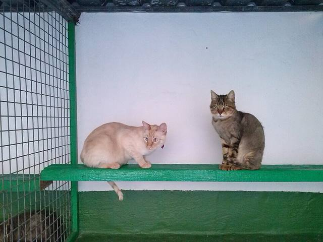
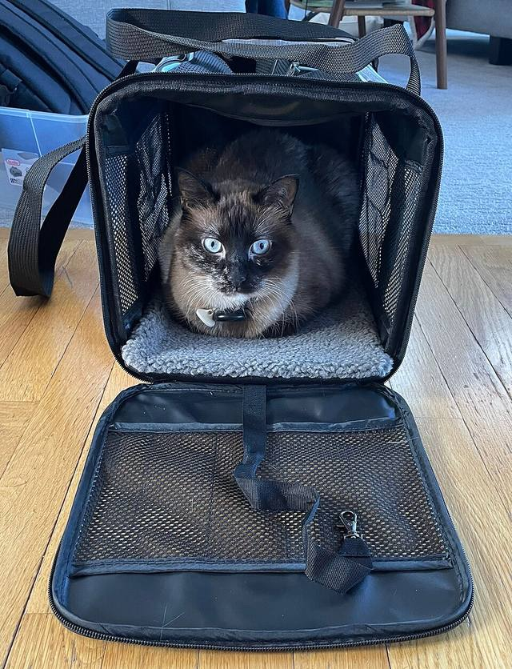

Services
What the clinic offers
As listed on the clinic's own page. Details for each service akan disahkan oleh pemilik
Routine check-ups for your pet.
Vaccines for your pet.
Care when your pet is unwell.
Surgical procedures at the clinic.
A place for your pet while you are away. Space & rates akan disahkan oleh pemilik.

Santamarcanda · CC BY-SA 4.0Animals seen & prices akan disahkan oleh pemilik
Opening hours
When we're open
*One listing shows 5:30pm — akan disahkan oleh pemilik
Before your visit
A few easy tips
- Bring cats in a secure carrier and dogs on a leash.
- Bring your pet's vaccination record if you have one.
- Check the latest notice for any change in hours.

Tylervigen · CC BY 4.0Find us
S2 Heights, Seremban
Ground floor, Jalan Pusat Komersial Saujana 5, S2 Heights, Seremban.
Map pin & parking akan disahkan oleh pemilik
FAQ
Common questions
Is the clinic open on Monday?
No — the clinic's page lists Monday as closed.
Do you offer boarding?
Yes, boarding is listed among the clinic's services. Availability & rates akan disahkan oleh pemilik.
Do I need an appointment?
Akan disahkan oleh pemilik. Please contact the clinic through its official channel.
How much is a vaccination?
Prices akan disahkan oleh pemilik.